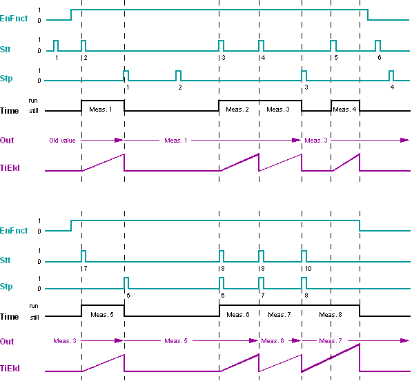

STPWATCH: Stop watch
STPWATCH (FB410) 块确定启动输入时的递增斜率和停止输入时的递减斜率之间的时间差。
功能性
该块确定启动输入 [Stt] 处的递增斜率与停止输入 [Stp] 处的递减斜率之间的时间差。在输出 [Out] 测量后，时间差可用于进一步处理。输出 [Out] 始终包含最后一个有效的时间测量值。
此外，输出 [TiEld] 可指示当前累计时间。该输出主要用于调试期间的测试。
整个功能可在输入 [EnFnct] 处禁用：如果 [EnFnct] = 0（否），则不会执行新的时间测量。
输出值 [Out] 保留保存，因此启动后旧值可用。
特殊情况：
- With [EnFnct] = 0 (No), all current time measurements are reset. [Stt] and [Stp] are ignored.
- Further [Stt] pulses during the active time measurement reset time measurement and restart it; the stopped measured is invalid.
- Further [Stp] pulses during a measurement break are ignored.
- Output [Out] contains a new value only when the measurement is complete, i.e. [EnFnct] was 1 (Yes) during the entire measurement and a [Stt] pulse was first available and then a [Stp] pulse.
- Output [TiEld] is active as soon as measurement starts, i.e. also for incomplete measurements. If no measurement is active, [TiEld] = 0.
- If an increasing slope occurs simultaneously at [Stt] and [Stp], the stop input is processed before the start input within the same cycle. Thus, the current measurement is ended and becomes valid, and a new measurement starts.
输入和输出信号的时间相关过程示例：

解释：
- Start pulse 1 is invalid, as [EnFnct] = 0 (No).
- Start pulse 2 is valid, stop pulse 1 is also valid. This results in a valid measurement Meas.1. The time value of Meas.1 is assumed in [Out].
- Stop pulse 2 is ignored, as it is in a measurement pause.
- Start pulse 3 is valid, but not followed by a stop pulse. Measurement Meas.2 is invalid, but the value is not assumed in [Out].
- Start pulse 4 is valid. It stops measurement Meas.2 and starts Meas.3. Stop pulse 3 is valid. Measurement Meas.3 is valid, and the value is assumed in [Out].
- Start pulse 5 is valid, but is interrupted by a stop by [EnFnct] = 0 (No). Measurement Meas.2 is invalid, and the value is not assumed in [Out].
- Start pulse 6 and stop pulse 4 are invalid, as [EnFnct] = 0 (No).
- Start pulse 7 and stop pulse 5 are valid and result in valid measurement 5, assumed in [Out].
- Start pulse 8 and stop pulse 6 arrive at the same time, but are first evaluated as stop pulse and then as start pulse. The stop pulse is ignored, as no previous start occurred. The start pulse starts measurement Meas.6. This measurement is completed by stop pulse 7 arriving at the same time as start pulse 9. Measurement 6 is valid, and is assumed in [Out].
- Measurement Meas.7 is started at the same time. This measurement is completed by stop pulse 8 arriving at the same time as start pulse 10. Measurement 7 is valid, and is assumed in [Out].
- Measurement Meas.8 is started at the same time. This measurement is interrupted by [EnFnct] = 0 (No) and is invalid.
输入
Pin | E | Description |
EnFnct | p | 启用功能。 1（是）：该功能已启用。 0（否）：该功能被禁用。 |
Stt | pa | 开始。 |
Stp | pa | 停止 |
输出
Pin | E | Description |
Out | fx | 输出。 |
TiEld | a | 已过去的时间。 |
输入值
Pin | Description | Data type | Default value | E.g. Engineering unit or Text group | Min. | Max. |
EnFnct | 启用功能。 | 布尔值 | 1（是） | 不，是 |
|
|
Stt | 开始。 | 布尔值 | 0（否） | 不，是 |
|
|
Stp | 停止 | 布尔值 | 0（否） | 不，是 |
|
|
输出值
Pin | Description | Data type | Default value | E.g. Engineering unit or Text group | Min. | Max. |
Out | 输出。 | 时间 | T#0D_0H_0M_0S_0MS | T#0D_0H_0M_0S_0MS |
|
|
TiEld | 已过去的时间。 | 时间 | T#0D_0H_0M_0S_0MS | T#0D_0H_0M_0S_0MS |
|
|
应用
The start and stop inputs allow for measuring runtimes between two different events, e.g.终端开关“关闭”和“打开”之间的阻尼器运行时间，或泵在关闭和下一次打开之间的暂停时间（使用两个按钮的停止时间）。
如果必须测量两个相同事件之间的时间，例如两次开启事件之间的时间，这可以通过将事件发送到停止输入和启动输入（带有 1 个按钮的计时器）来实现。
过程响应
从第三个处理周期开始，该块将使用输入处的值进行处理，因为只有此时输入处的值才被视为有效。 [TiEld] = 0 在前两个处理周期内发出。
从第一个处理周期开始，剩余保存的值在[Out]处发出。
故障排除
标准（参见General rules and information).